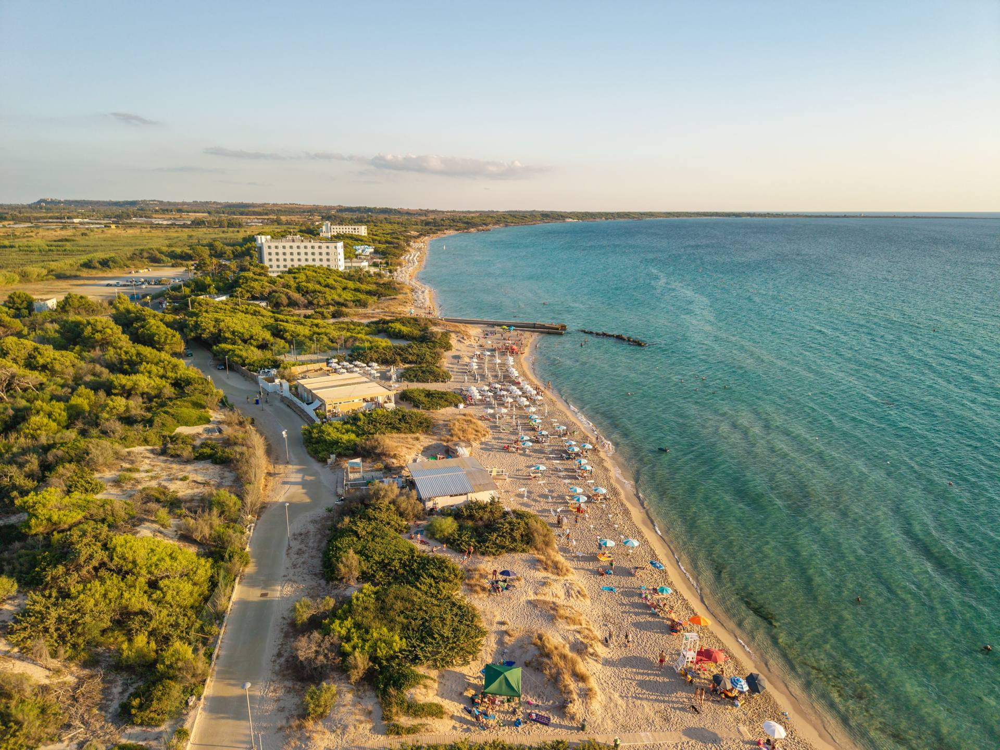

Hotel · Pescoluse
Hotel Beach Salento3 stelle
MareSpiaggia a circa 200 metri
Sera12 camere, lido convenzionato
AutoParcheggio davanti all'hotel
da € 80 a persona, al giornoChiedi

La chiamano le Maldive del Salento. Esagerato, ma non troppo.
Folla del mese: • tranquilla · •• si riempie · ••• piena
Il mare qui dà il meglio con tramontana o levante. Se tira scirocco, mezz'ora di macchina e vai sull'Adriatico.